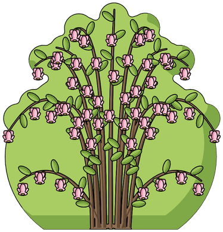

Кольквіція приємна
Кущ до трьох метрів заввишки, який у травні–червні вкривається тисячами ніжно-рожевих дзвіночків.

Кущ до трьох метрів заввишки, який у травні–червні вкривається тисячами ніжно-рожевих дзвіночків.

Білі квіти з насиченим ароматом відкриваються на початку літа. Чубушник утворює живі огорожі вздовж стежок.

Колючий кущ із дрібним листям і червоними ягодами, що прикрашають сад до самої зими.